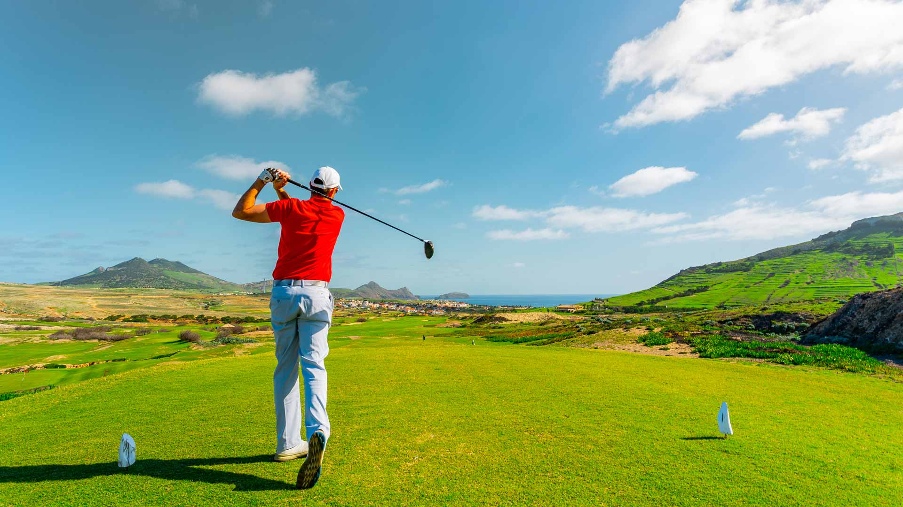

01
Purpose
The goal of this project is to explore how cost, transportation, and limited exposure prevent students from participating in golf and snow sports.
02
Research
The project looks at the financial and logistical barriers that make these sports harder to access compared with more common school activities.
03
Solutions
Possible solutions include school partnerships, shared equipment programs, transportation support, and beginner opportunities for students.
04
Impact
Making these sports more accessible can expand student experiences, improve confidence, and give more people the chance to participate.

Why It Matters
Access shapes opportunity
When students are excluded from certain activities because of cost or lack of access, they miss out on more than just a sport. They miss new skills, new experiences, and new communities.
This project argues that accessibility should be part of how schools think about extracurricular opportunities.
Get Involved
Donate or receive equipment
Help expand access by donating gear or requesting equipment.
Go to Give / Get Page